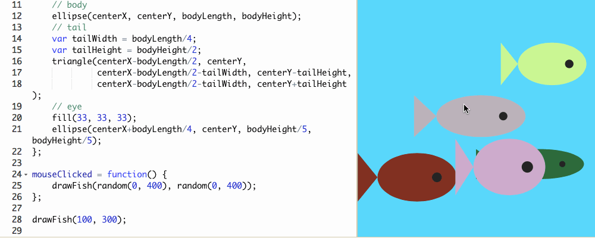
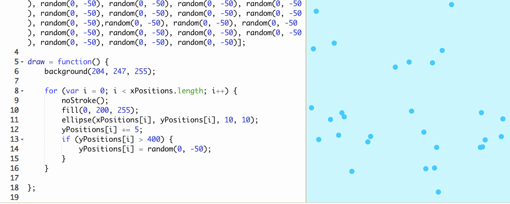
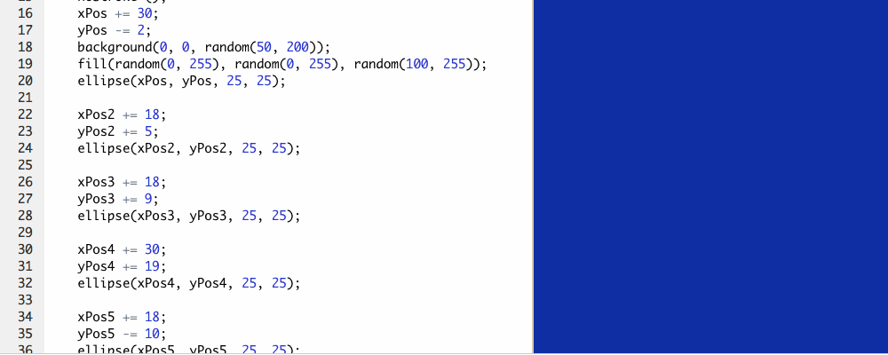
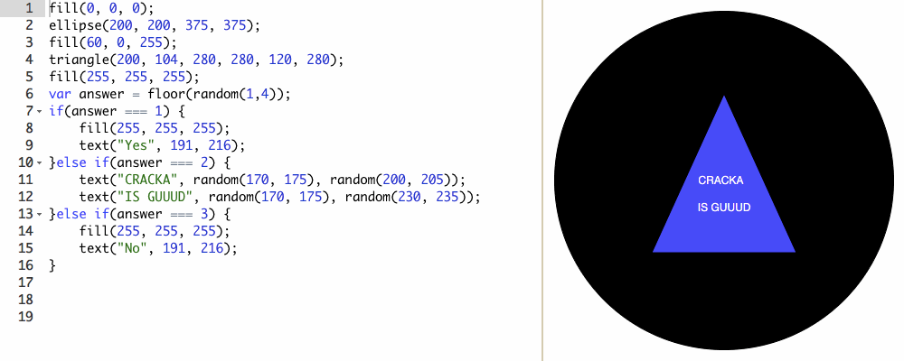
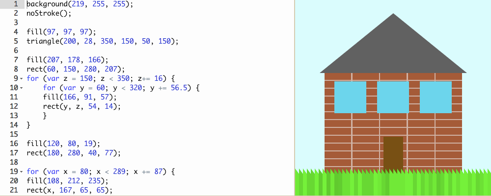
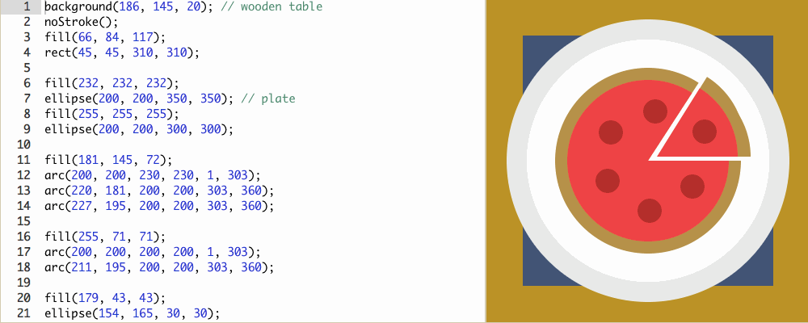
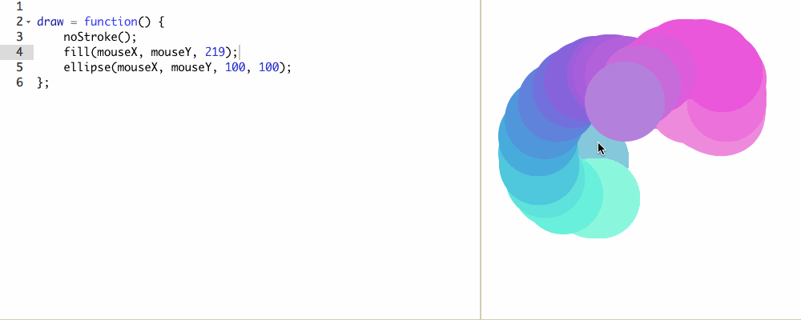
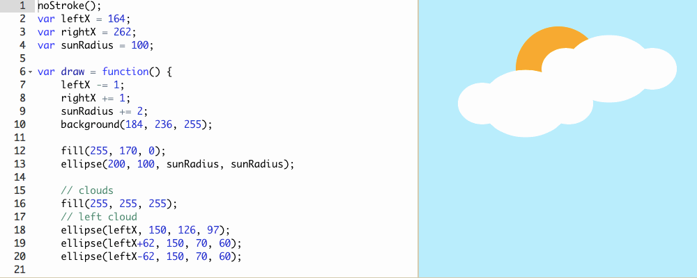
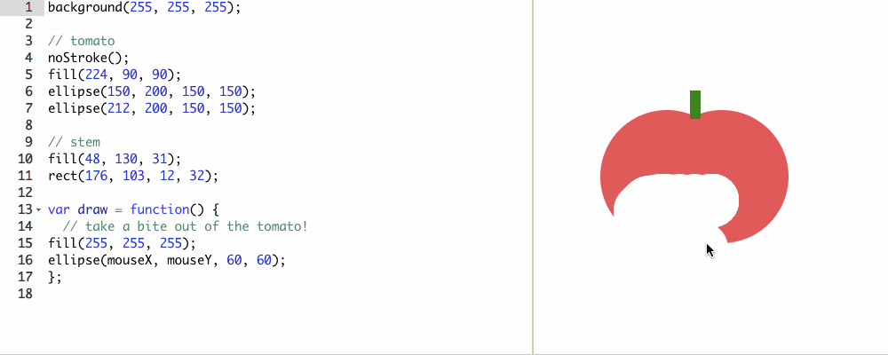
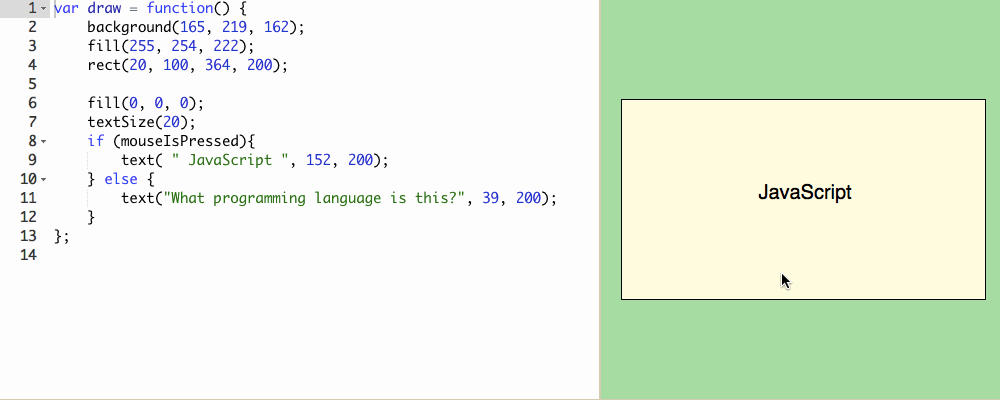

This is a slideshow of some of the things ive worked on in Khan Academy. Mouse ofer them to see a discreption.
Fish: This is a fish tank. When the mouse is pressed, a randomized fish appears somewhere on the screen.
Rain: This shows rain falling constantly. As soon as a drop hits the bottom of the screen it moves back to the top and continues falling.
Stars: This shows a small series of random colored stars dart in different directions off the screen.
8-Ball: This is a magic 8 ball. Each time the program is run, the output is different.
House: This is a static house. The color of the grass was selectet at random, and is changed by running the program again.
Pie: This pie started out as a pizza, but everyone thought it was a pie. My creative vision was destroyed
Drawing: This is a simple drawing program. The different areas of the screen corrispond to different colors. The inbetewwn spaces fade from one color to the next.
Clouds: This is a simple anamation where the clouds move to the sides of the screen as the sun gets infinitely bigger to swallow us all.
Tomato: This tomato is erased as you move your mouse over it.
Javascript: This is a simple button. When you press on it, it displays the answer to the question.